Wild plants you can forage in Canada
158 wild greens, berries, nuts, roots and flowers, with when each is in season, where it grows, how to harvest it and what to cook.
Greens
 Beach peaJun–Aug
Beach peaJun–Aug Broadleaf plantainMay–Oct
Broadleaf plantainMay–Oct Bull kelpJun–Sep
Bull kelpJun–Sep ChickweedApr–Dec
ChickweedApr–Dec CleaversApr–Jun
CleaversApr–Jun Common mallowMay–Oct
Common mallowMay–Oct Common milkweedMay–Aug
Common milkweedMay–Aug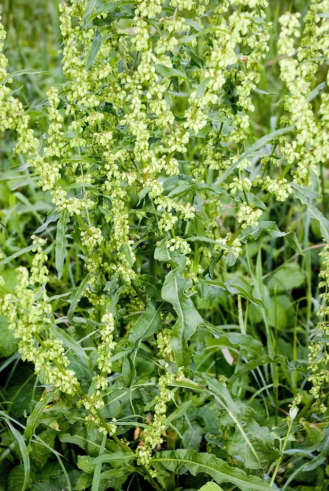
Curly dockApr–Jul DandelionApr–Nov
DandelionApr–Nov DulseApr–Sep
DulseApr–Sep Field garlicMar–Jun
Field garlicMar–Jun FireweedJun–Sep
FireweedJun–Sep Garlic mustardApr–Jul
Garlic mustardApr–Jul Iceland mossAll year
Iceland mossAll year Irish mossMay–Sep
Irish mossMay–Sep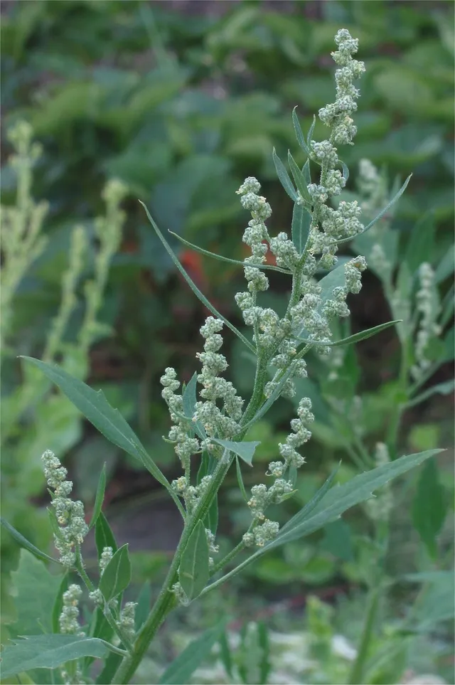
Lamb's quartersJun–Oct Laver (wild nori)Mar–Jun
Laver (wild nori)Mar–Jun Miner's lettuceMar–Jun
Miner's lettuceMar–Jun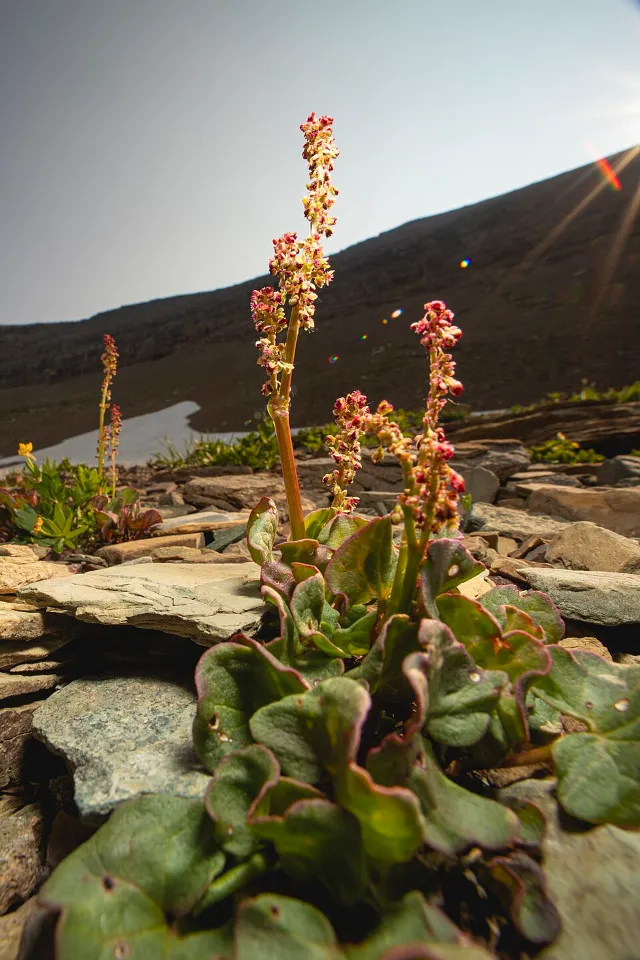
Mountain sorrelJun–Aug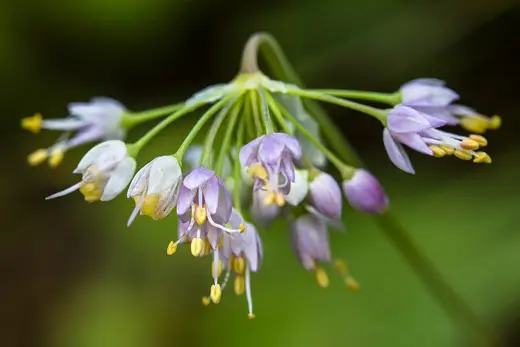
Nodding onionMay–Aug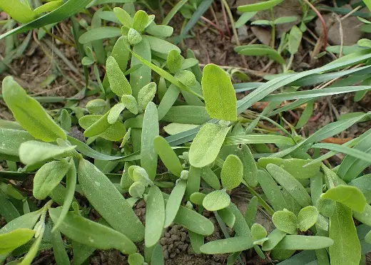
OracheJun–Sep Ostrich fern fiddleheadsMay–Jun
Ostrich fern fiddleheadsMay–Jun PickleweedJun–Sep
PickleweedJun–Sep PurslaneJul–Oct
PurslaneJul–Oct RampsMay–Jun
RampsMay–Jun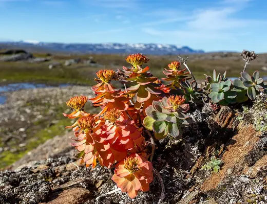
RoserootMay–Jul Scurvy grassJun–Aug
Scurvy grassJun–Aug Sea lettuceMay–Sep
Sea lettuceMay–Sep Sea rocketJun–Sep
Sea rocketJun–Sep Sea sandwortMay–Aug
Sea sandwortMay–Aug Seaside plantainMay–Aug
Seaside plantainMay–Aug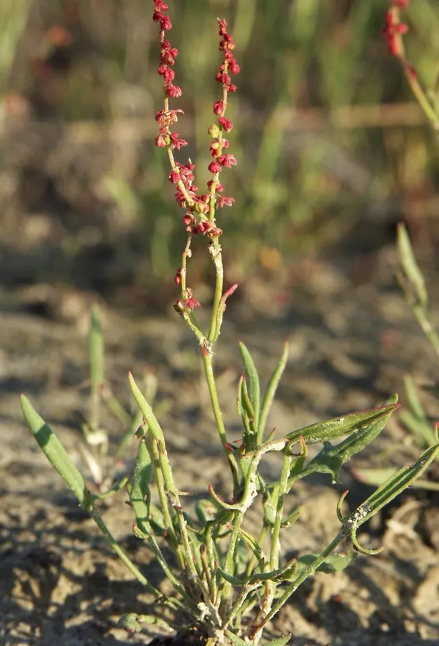
Sheep sorrelMay–Oct Shepherd's purseMar–Jun
Shepherd's purseMar–Jun SochanApr–Jun
SochanApr–Jun Sow thistleMay–Sep
Sow thistleMay–Sep Spruce tipsJun–Jul
Spruce tipsJun–Jul Stinging nettleApr–Jul
Stinging nettleApr–Jul Sugar kelpApr–Jun
Sugar kelpApr–Jun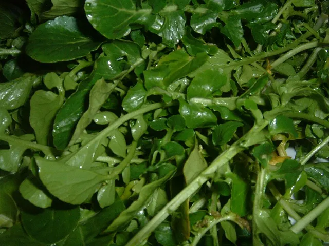
WatercressApr–Nov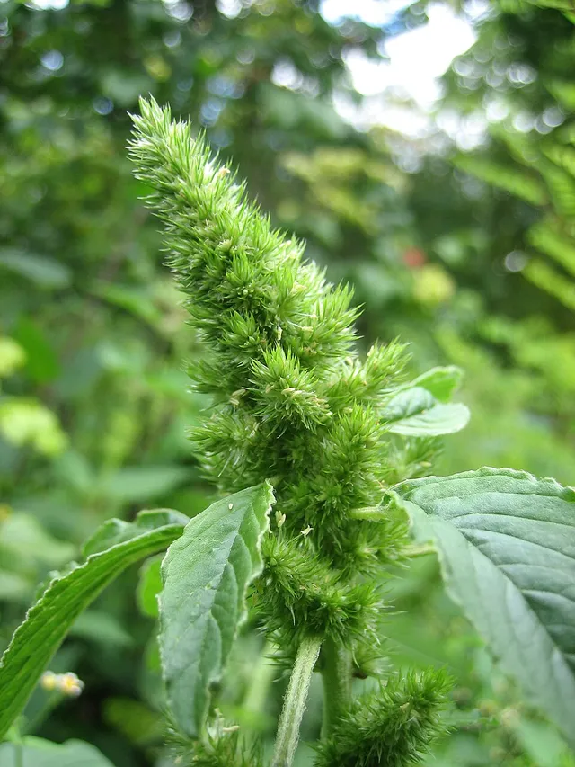
Wild amaranthJul–Oct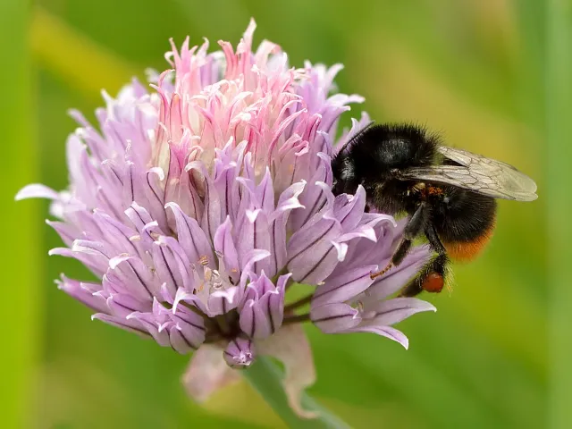
Wild chivesMay–Jul Wild lettuceMay–Jun
Wild lettuceMay–Jun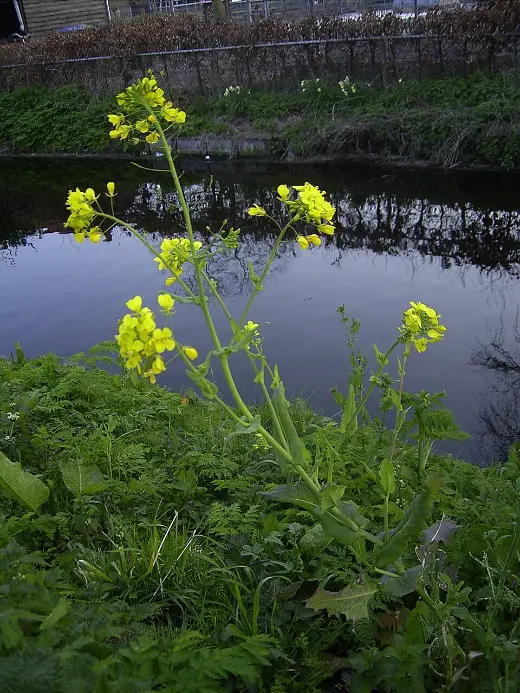
Wild mustardApr–Jul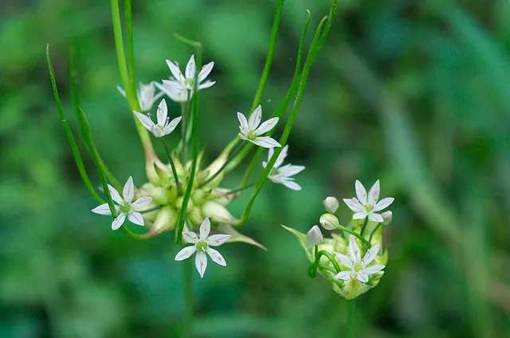
Wild onionApr–Jul Wood nettleMay–Jun
Wood nettleMay–Jun Wood sorrelMay–Nov
Wood sorrelMay–Nov
Fruit & berries
 Arctic brambleJul–Aug
Arctic brambleJul–Aug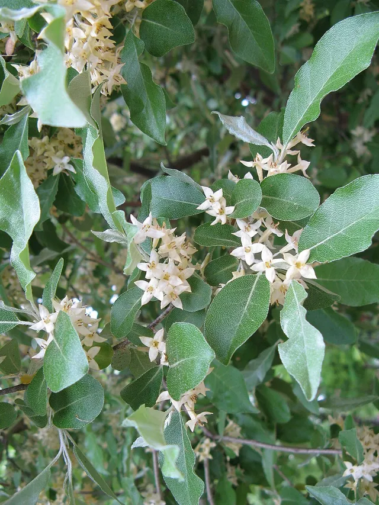
Autumn oliveSep–Nov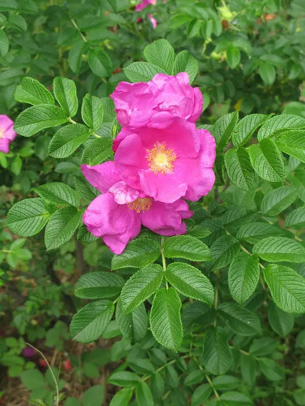
Beach roseAug–Oct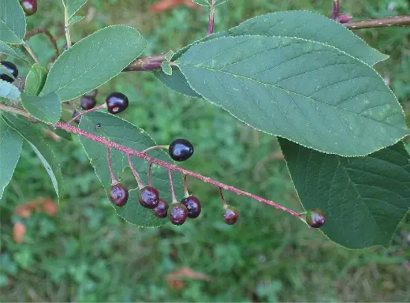
Black cherryAug–Sep Black chokeberryAug–Sep
Black chokeberryAug–Sep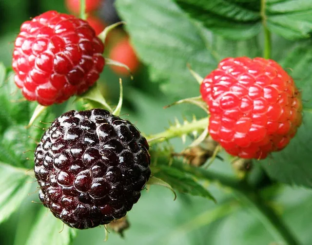
Black raspberryJun–Jul BlackberryJul–Sep
BlackberryJul–Sep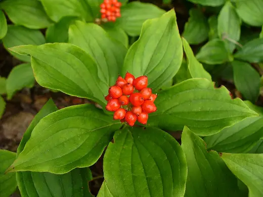
BunchberryJul–Sep ChokecherryAug–Sep
ChokecherryAug–Sep CloudberryJul–Aug
CloudberryJul–Aug CrabappleSep–Nov
CrabappleSep–Nov CrowberryAug–Sep
CrowberryAug–Sep DewberryJul–Aug
DewberryJul–Aug ElderberryAug–Sep
ElderberryAug–Sep Ground cherryJul–Sep
Ground cherryJul–Sep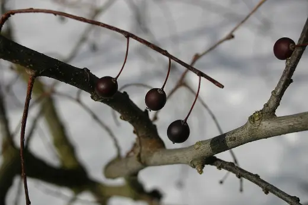
HackberrySep–Dec HaskapJun–Jul
HaskapJun–Jul HawthornSep–Oct
HawthornSep–Oct Highbush cranberrySep–Nov
Highbush cranberrySep–Nov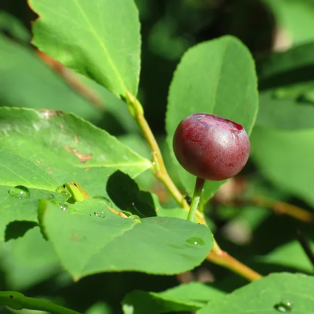
HuckleberryJul–Sep Juniper berriesSep–Mar
Juniper berriesSep–Mar LingonberryAug–Oct
LingonberryAug–Oct MulberryMay–Jul
MulberryMay–Jul NannyberrySep–Nov
NannyberrySep–Nov Oregon grapeJul–Sep
Oregon grapeJul–Sep PawpawAug–Oct
PawpawAug–Oct Pin cherryJul–Aug
Pin cherryJul–Aug Red huckleberryJun–Aug
Red huckleberryJun–Aug Rose hipsSep–Dec
Rose hipsSep–Dec Rowan berriesAug–Nov
Rowan berriesAug–Nov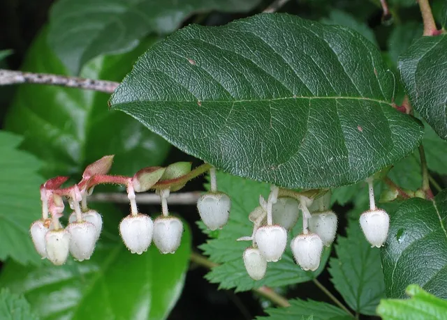
SalalAug–Sep SalmonberryMay–Jul
SalmonberryMay–Jul Sea buckthornAug–Oct
Sea buckthornAug–Oct ServiceberryJun–Jul
ServiceberryJun–Jul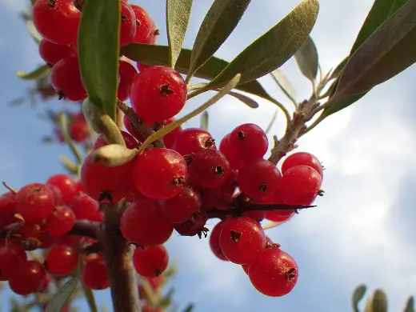
Silver buffaloberryAug–Oct SoapberryJul–Aug
SoapberryJul–Aug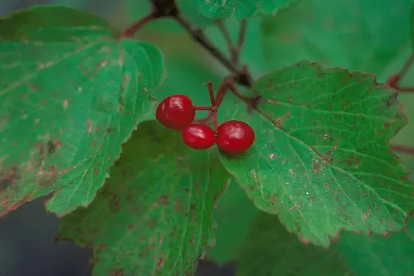
SquashberryAug–Oct Staghorn sumacAug–Sep
Staghorn sumacAug–Sep ThimbleberryJul–Aug
ThimbleberryJul–Aug Wild appleAug–Oct
Wild appleAug–Oct Wild black currantJul–Aug
Wild black currantJul–Aug Wild blueberryJul–Aug
Wild blueberryJul–Aug Wild cranberrySep–Oct
Wild cranberrySep–Oct Wild gooseberryJul–Aug
Wild gooseberryJul–Aug Wild grapeAug–Oct
Wild grapeAug–Oct Wild plumJul–Sep
Wild plumJul–Sep Wild raspberryJul–Aug
Wild raspberryJul–Aug Wild strawberryMay–Jul
Wild strawberryMay–Jul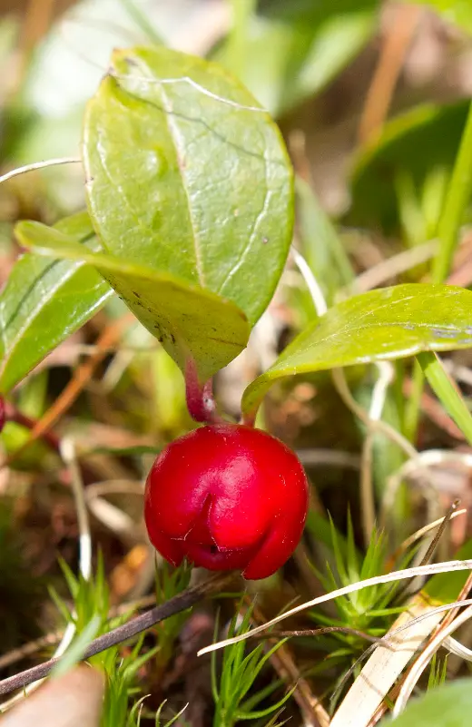
WintergreenSep–May
Roots & shoots
 Burdock rootMay–Nov
Burdock rootMay–Nov CamasJul–Oct
CamasJul–Oct CattailMay–Aug
CattailMay–Aug ChicoryApr–Dec
ChicoryApr–Dec ChufaSep–Oct
ChufaSep–Oct GroundnutOct–May
GroundnutOct–May Hop shootsMay–Jun
Hop shootsMay–Jun Japanese knotweed shootsMay–Jun
Japanese knotweed shootsMay–Jun Jerusalem artichokeNov–Apr
Jerusalem artichokeNov–Apr Prairie turnipJun–Jul
Prairie turnipJun–Jul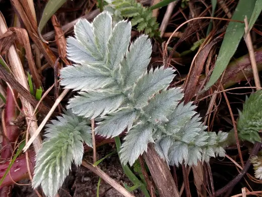
SilverweedSep–Nov Solomon's seal shootsMay
Solomon's seal shootsMay Spring beautyApr–May
Spring beautyApr–May WapatoOct–Jan
WapatoOct–Jan Wild asparagusMay–Jul
Wild asparagusMay–Jul
Seeds & grains
 Wild riceAug–Sep
Wild riceAug–SepSap & starch
 Birch sapMar–Apr
Birch sapMar–Apr Maple sapFeb–Mar
Maple sapFeb–MarProtein
 Blue musselsOct–Apr
Blue musselsOct–Apr ClamsSep–May
ClamsSep–May OystersSep–Apr
OystersSep–Apr PeriwinklesAll year
PeriwinklesAll year Razor clamsMar–Oct
Razor clamsMar–OctNuts
 AcornsSep–Nov
AcornsSep–Nov American hazelnutAug–Sep
American hazelnutAug–Sep BeechnutSep–Oct
BeechnutSep–Oct Black walnutSep–Oct
Black walnutSep–Oct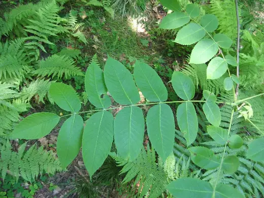
ButternutSep–Oct ChestnutOct
ChestnutOct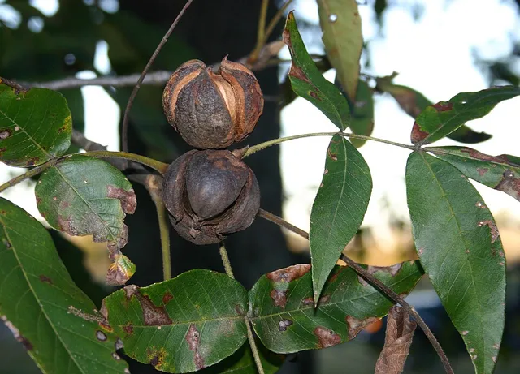
Shagbark hickorySep–Oct
Flowers & teas
 Anise hyssopJun–Sep
Anise hyssopJun–Sep Balsam fir tipsMay–Jun
Balsam fir tipsMay–Jun Black locust flowersJun–Jul
Black locust flowersJun–Jul Common blue violetApr–Jun
Common blue violetApr–Jun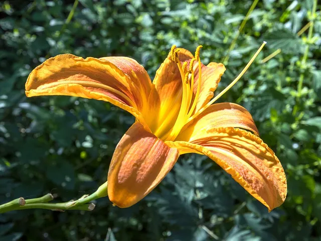
DaylilyJul–Aug ElderflowerJun–Aug
ElderflowerJun–Aug Labrador teaAll year
Labrador teaAll year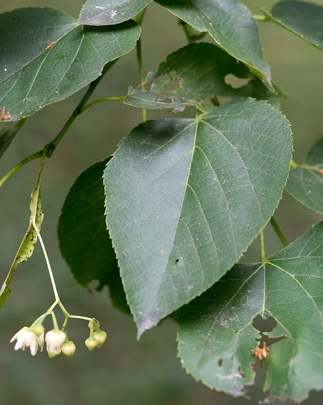
Linden flowersJul–Aug Pineapple weedJun–Sep
Pineapple weedJun–Sep Red cloverJun–Oct
Red cloverJun–Oct SassafrasJun–Sep
SassafrasJun–Sep SpicebushSep–Oct
SpicebushSep–Oct Sweet galeMay–Sep
Sweet galeMay–Sep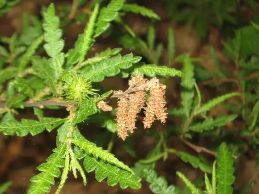
SweetfernJun–Sep White cloverJun–Oct
White cloverJun–Oct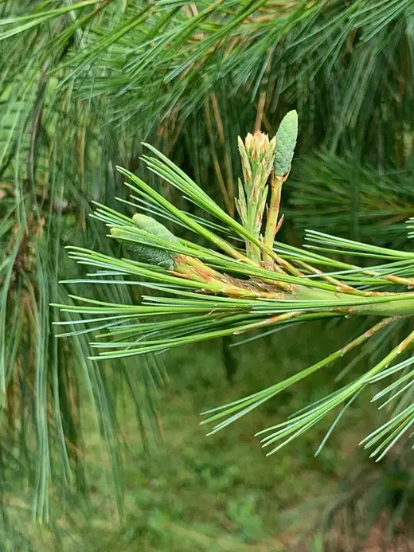
White pine needlesAll year Wild bergamotJul–Sep
Wild bergamotJul–Sep Wild mintJun–Sep
Wild mintJun–Sep YarrowJun–Sep
YarrowJun–Sep
 Black trumpetJul–Oct
Black trumpetJul–Oct ChagaAll year
ChagaAll year ChanterelleJun–Sep
ChanterelleJun–Sep Chicken of the woodsJun–Oct
Chicken of the woodsJun–Oct Giant puffballAug–Oct
Giant puffballAug–Oct Hedgehog mushroomAug–Dec
Hedgehog mushroomAug–Dec Lobster mushroomJul–Sep
Lobster mushroomJul–Sep MorelMay–Jun
MorelMay–Jun Oyster mushroomMay–Nov
Oyster mushroomMay–Nov Pine mushroomSep–Oct
Pine mushroomSep–Oct PorciniAug–Oct
PorciniAug–Oct Shaggy maneJun–Oct
Shaggy maneJun–Oct